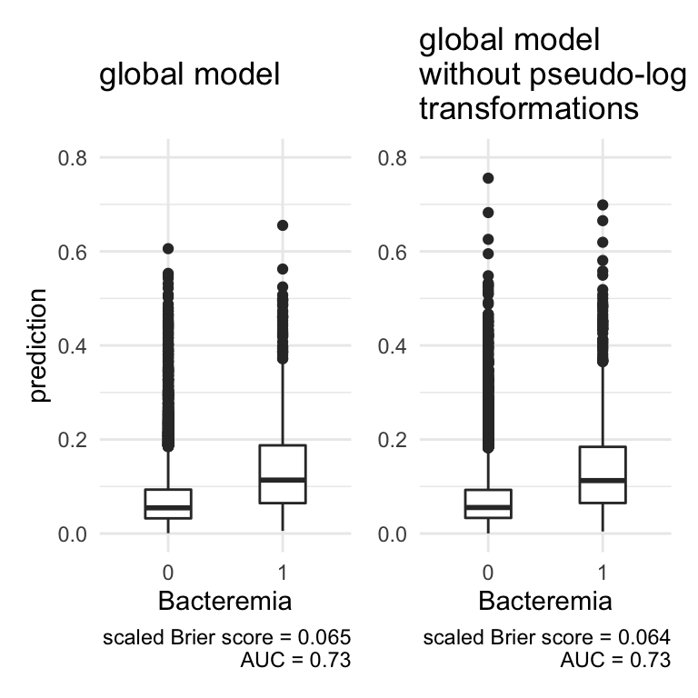
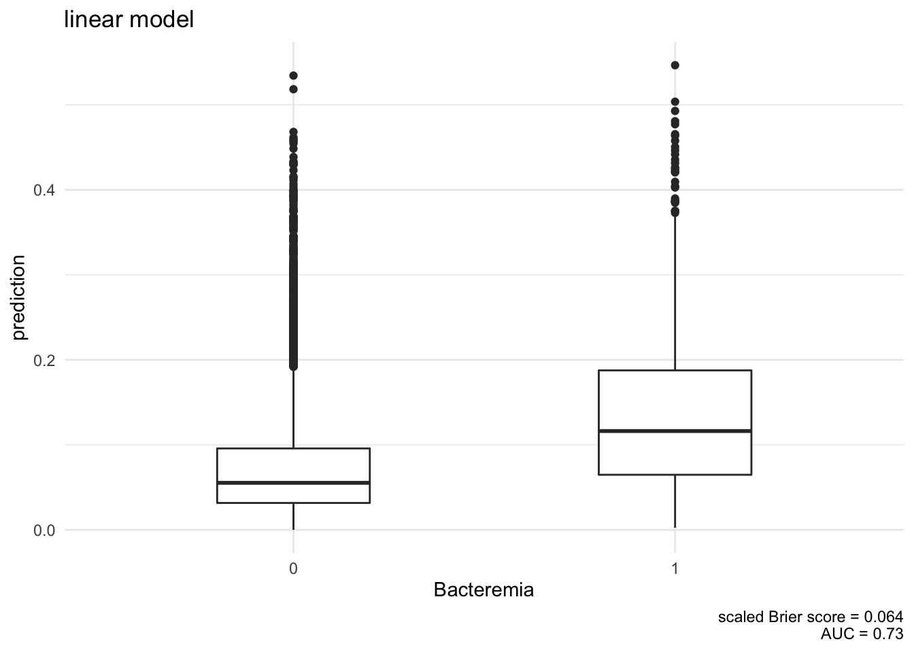
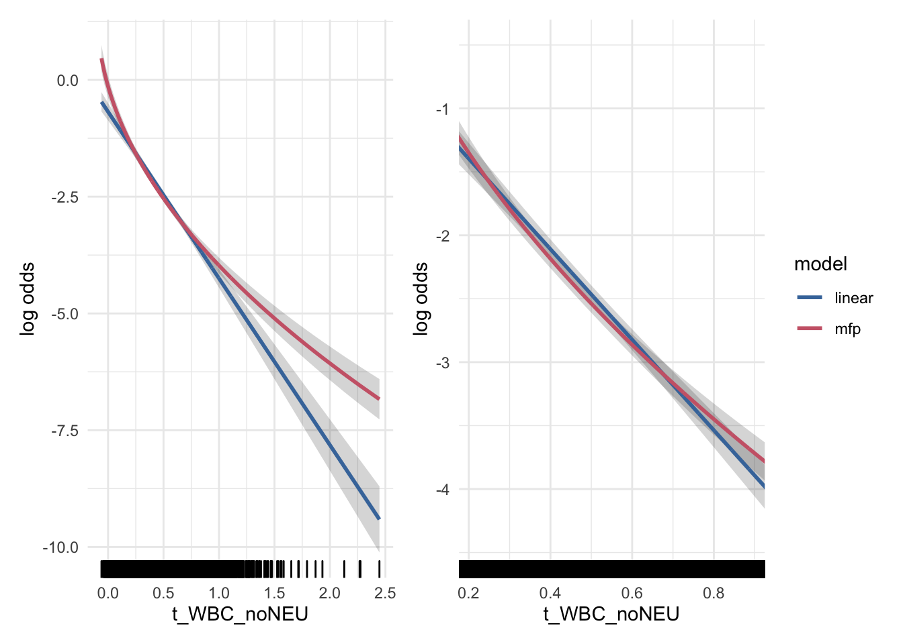

Supplementary Example
Overview
# define key predictors without pseudo-log trafo ('orig') and transformed ('trans'), replace WBC with WBC_noNEU
key_predictors_orig <- bact_variables$vip_vars %>%
str_replace('WBC', 'WBC_noNEU')
key_predictors_trans <- bact_transformed$vip_vars %>%
str_replace('WBC', 'WBC_noNEU')
# include only complete cases
model_df_complete <- c_bact[c('BC', unique(c(bact_variables$vip_vars, bact_transformed$vip_vars)))] %>%
mutate(
WBC_noNEU = WBC - NEU
) %>%
na.omit
model_df_complete <- model_df_complete %>%
mutate(
t_WBC_noNEU = pseudo_log(WBC_noNEU, ida_trans(model_df_complete$WBC_noNEU)$const)
)
n_excl_cases <- dim(c_bact)[1] - dim(model_df_complete)[1]
pct_excl <- round((1-(dim(model_df_complete)[1] / dim(c_bact)[1])) * 100,1)
pct_complete <- dim(model_df_complete)[1] / dim(c_bact)[1] * 100In the following examples we use the Bacteremia data with complete observations regarding the key predictors WBC_noNEU, Alter, BUN, KREA, NEU, PLT, which represent 93.9% of the whole dataset. We will fit a global logistic regression model with the outcome ‘BC’ and the key predictors as covariates. We will use pseudo-log transformations as suggested in the IDA. Within the model, all key predictors will be transformed by fractional polynomials of order 1 (df = 2).
The aim of the examples is to showcase how decisions derived from IDA influence the results of the fitted model.
Global Model
The global model will be fitted by the mfp function. If not indicated otherwise, we will use the fp-transformations of the key predictors determined in global model in all consecutive models. For all models we report McFaddens’s R² and the AUC, i.e. the area under the ROC curve, and boxplots comparing BC predictions with outcomes.
Model Summary
global_formula <- paste0('BC ~ ', paste(paste0(paste0('fp(', key_predictors_trans), ',df=2)'), collapse = ' + '))
fit_mfp_complete <- mfp(as.formula(global_formula),
data = model_df_complete,
family = binomial)
# save global formula with fp-trafos
global_formula_fp <- paste('BC ~ ', paste0(tidy(fit_mfp_complete)$term[-1], collapse = ' + '))
tidy(fit_mfp_complete) %>%
gt_model_table(title = 'global model')| global model | ||||
|---|---|---|---|---|
| term | estimate | std.error | statistic | p.value |
| (Intercept) | −2.04 | 0.38 | −5.33 | 1.00 × 10−7 |
| I((t_WBC_noNEU + 0.1)^0.5) | −5.24 | 0.26 | −20.40 | 1.71 × 10−92 |
| I((t_NEU + 0.1)^1) | 2.00 | 0.16 | 12.67 | 8.39 × 10−37 |
| I((Alter/100)^1) | 1.60 | 0.21 | 7.71 | 1.25 × 10−14 |
| I(t_KREA^1) | 0.60 | 0.20 | 2.98 | 2.87 × 10−3 |
| I(((PLT + 1)/100)^1) | −0.08 | 0.03 | −2.46 | 1.38 × 10−2 |
| I(t_BUN^1) | 0.23 | 0.19 | 1.22 | 2.23 × 10−1 |
#Mc Fadden's R²
#r_squared_mcfadden <- with(summary(fit_mfp_complete), 1 - deviance/null.deviance)
#AUC
AUC = auc(fit_mfp_complete$y, predict(fit_mfp_complete, type = 'response'))
p_model_complete <- logreg_summary_plot(fit_mfp_complete, 'global model')
p_model_complete
Functional forms of global model
We now take a look at the functional forms of the covariates in the global model, which are determined by the fp algorithm. Besides scaling factors, only for t_WBC_noNEU the fp algorithm chose a non-linear transformation (note the ‘^0.5’ in the term column). This means all other covariates enter the model in a linear fashion. In the following effect plots, each variable is adjusted to the median of the other variables in the model.
# medians of all key predictors, selected variables will be adjusted to these medians in effect plots
model_df_medians <- model_df_complete[,unique(c(key_predictors_orig, key_predictors_trans))] %>%
summarise_all(median)
for(i in 1:length(key_predictors_trans)){
new_data <- bind_cols(
model_df_medians,
x = model_df_complete[,key_predictors_trans[i]]
) %>%
select(-key_predictors_trans[i]) %>%
as_tibble() %>%
distinct()
pred_complete <- predict(fit_mfp_complete,
newdata = new_data %>%
rename(!!key_predictors_trans[i] := x), # is needed so predict finds the variables
type = 'link', se.fit = TRUE)
plot_df <- cbind(
new_data,
yhat = pred_complete$fit,
yhat.lwr = pred_complete$fit - 1.96*pred_complete$se.fit,
yhat.upr = pred_complete$fit + 1.96*pred_complete$se.fit
) %>%
as_tibble()
p <- plot_df %>%
ggplot(aes(x = x, y = yhat, ymin = yhat.lwr, ymax = yhat.upr)) +
geom_ribbon(alpha = .2, color = NA) +
geom_line() +
geom_rug(
data = fit_mfp_complete$X %>% as.data.frame,
aes_string(x = key_predictors_trans[i]),
inherit.aes = FALSE) +
labs(
y = 'log odds',
x = key_predictors_trans[i]
) +
theme_minimal()
print(p)
if(key_predictors_trans[i] == 'PLT'){ p_effect_PLT <- p} # save for example 5
}


Example 1: to transform or not to transform
Only for one out of the six key predictors did the fp algorithm chose a non-linear transformation. But out of those six variables, four were pseudo-log transformed before entering the model. In the first example we want to compare the global model to a model using the key predictors on their original scale.
# fit the complete mfp model using only original, non-transformed variables
fit_mfp_complete_notrans <- mfp(as.formula(global_formula %>% str_replace_all('t\\_', '')),
data = model_df_complete,
family = binomial)
tidy(fit_mfp_complete_notrans) %>% gt_model_table('global model without pseudo-log tranformations')| global model without pseudo-log tranformations | ||||
|---|---|---|---|---|
| term | estimate | std.error | statistic | p.value |
| (Intercept) | −3.18 | 0.28 | −11.17 | 5.48 × 10−29 |
| log((WBC_noNEU + 0.2)) | −1.25 | 0.06 | −20.22 | 5.92 × 10−91 |
| I(((NEU + 0.1)/10)^0.5) | 1.52 | 0.12 | 12.99 | 1.34 × 10−38 |
| I((Alter/100)^1) | 1.64 | 0.20 | 8.26 | 1.51 × 10−16 |
| I(((PLT + 1)/100)^1) | −0.08 | 0.03 | −2.53 | 1.13 × 10−2 |
| I((BUN/10)^1) | 0.02 | 0.02 | 0.68 | 5.00 × 10−1 |
| I(KREA^-0.5) | −0.77 | 0.21 | −3.69 | 2.20 × 10−4 |
Note the different fp-transformation arising when the key predictors are not pseudo-log transformed. On the original scale, three covariates instead of one now enter the model via a non-linear fp-transformation. This suggests that a transfromation prior to the regression model ‘outsources’ the need for transformations within the model. Now let us compare the model performances.
p_model_notrans <- logreg_summary_plot(fit_mfp_complete_notrans, 'global model \nwithout pseudo-log \ntransformations') # maybe side by side with global model?
p_model_complete + coord_cartesian(ylim = c(0,.8)) + p_model_notrans + theme(axis.title.y = element_blank()) + coord_cartesian(ylim = c(0,.8))
With regards to McFadden’s R² and the AUC, the differences between the two approaches is marginal.
Next we will compare the differences of the functional forms in the two models for those covariates where a pseudo-log transformation was suggested in IDA. We will look at the log odds for bacteremia by each covariate on the original and the transformed scale, and compare the global model using the original and the pseudo-log transformed covariates. Each variable is adjusted for the median of all other variables used.
for(i in 1:length(key_predictors_trans)){
if(key_predictors_orig[i] != key_predictors_trans[i]){
new_data <- bind_cols(
model_df_medians,
x_orig = model_df_complete[,key_predictors_orig[i]],
x_trans = model_df_complete[,key_predictors_trans[i]]
) %>%
select(-key_predictors_orig[i], -key_predictors_trans[i]) %>%
as_tibble() %>%
distinct()
pred_trans <- predict(fit_mfp_complete,
newdata = new_data %>%
rename( # is needed so predict finds the variables
!!key_predictors_orig[i] := x_orig,
!!key_predictors_trans[i] := x_trans),
type = 'link', se.fit = TRUE)
pred_original <- predict(fit_mfp_complete_notrans,
newdata = new_data %>%
rename(
!!key_predictors_orig[i] := x_orig,
!!key_predictors_trans[i] := x_trans),
type = 'link', se.fit = TRUE)
plot_df <- cbind(
new_data,
yhat_original = pred_original$fit,
yhat.lwr_original = pred_original$fit - 1.96*pred_original$se.fit,
yhat.upr_original = pred_original$fit + 1.96*pred_original$se.fit,
yhat_trans = pred_trans$fit,
yhat.lwr_trans = pred_trans$fit - 1.96*pred_trans$se.fit,
yhat.upr_trans = pred_trans$fit + 1.96*pred_trans$se.fit
) %>%
as_tibble() %>%
pivot_longer(
cols = contains('yhat')
) %>%
separate(name, c('var', 'model'), sep = '_') %>%
pivot_wider(
names_from = 'var', values_from = 'value'
) %>%
mutate(
model = case_when(
model == 'trans' ~ 'pseudo-log transformed',
model == 'original' ~ 'original scale'
)
)
p_original <- plot_df %>%
ggplot(aes(x = x_orig, y = yhat, ymin = yhat.lwr, ymax = yhat.upr, color = model, fill = model)) +
geom_ribbon(alpha = .2, color = NA) +
geom_line() +
geom_rug(data = fit_mfp_complete_notrans$X %>% as.data.frame,
aes_string(x = key_predictors_orig[i]),
inherit.aes = FALSE
) +
labs(
y = 'log odds',
title = 'on original scale',
x = key_predictors_orig[i],
color = 'model with data on',
fill = 'model with data on'
) +
theme_minimal() +
scale_color_ptol() +
scale_fill_ptol()
p_trans <- plot_df %>%
ggplot(aes(x = x_trans, y = yhat, ymin = yhat.lwr, ymax = yhat.upr, color = model, fill = model)) +
geom_ribbon(alpha = .2, color = NA) +
geom_line() +
geom_rug(data = fit_mfp_complete$X %>% as.data.frame,
aes_string(x = key_predictors_trans[i]),
inherit.aes = FALSE
) +
labs(
y = 'log odds',
title = 'on pseudo-log scale',
x = key_predictors_trans[i],
color = 'model with data on',
fill = 'model with data on'
) +
theme_minimal() +
scale_color_ptol() +
scale_fill_ptol()
p <- p_original + (p_trans +
theme(
axis.title.y = element_text(color = NA)
)) +
plot_layout(guides = 'collect') +
plot_annotation(caption = 'adjusted to medians of all other covariates') &
theme(legend.position = 'bottom')
print(p)
}
}


Example 2: the support of a model determines what it can explain
Next we compare the global model to a model were for an important variable, in our case we chose age, the variable support is reduced to the central 50% of the data (i.e. data within the 25% and 75% quantiles). Again, in the reduced models we use the same fp-transformations as in the global model.
m_pct <- .5
sel_central <- (model_df_complete$Alter > quantile(model_df_complete$Alter, 0.5-m_pct/2)) &
(model_df_complete$Alter < quantile(model_df_complete$Alter, 0.5+m_pct/2)) #needed later
set.seed(2)
sel_sample <- as.logical(round(runif(dim(model_df_complete)[1]))) # 50% random selection, needed later
pred_complete <- predict(fit_mfp_complete,
newdata = model_df_complete,
type = 'response')
y_complete <- fit_mfp_complete$y
pred_central <- predict(fit_mfp_complete,
newdata = model_df_complete[sel_central,],
type = 'response')
y_central <- fit_mfp_complete$y[sel_central]
pred_sample <- predict(fit_mfp_complete,
newdata = model_df_complete[sel_sample,],
type = 'response')
y_sample <- fit_mfp_complete$y[sel_sample]
r_squared_efron <- function(y, prediction){
n <- length(y)
1-(((1/n)*sum((y-prediction)^2))/((1/n)*sum((y-mean(y))^2)))
}
tribble(
~data, ~AUC, ~`sacled Brier score`,
'complete', auc(y_complete, pred_complete) %>% as.numeric(), cor(y_complete, pred_complete)^2,
'central 50%', auc(y_central, pred_central) %>% as.numeric(), cor(y_central, pred_central)^2,
'50% sample', auc(y_sample, pred_sample) %>% as.numeric(), cor(y_sample, pred_sample)^2,
) %>%
gt() %>%
fmt_number(2, decimals = 3) %>%
fmt_number(3, decimals = 5)| data | AUC | sacled Brier score |
|---|---|---|
| complete | 0.732 | 0.06456 |
| central 50% | 0.723 | 0.05321 |
| 50% sample | 0.737 | 0.06587 |
p_ex2 <- rbind(
tibble(
BC = y_complete,
prediction = pred_complete,
model = 'complete data'
),
tibble(
BC = y_central,
prediction = pred_central,
model = 'within IQR (age)'
),
tibble(
BC = y_sample,
prediction = pred_sample,
model = 'random 50% subsample'
)) %>%
mutate(model = factor(model, levels = c('complete data', 'within IQR (age)', 'random 50% subsample'))) %>%
ggplot(aes(x = factor(BC), y = prediction, group = BC)) +
geom_boxplot() +
facet_grid(~model) +
theme_minimal() +
labs(x = 'BC')
p_ex2
Example 3: the limits of mulitiple imputation
To show the effect of multiple imputation if the number of missing values is high, we construct a dataset with 50% artificially generated missing values in one variable. First, recall the output of the complete model, relying on the Bacteremia data with complete cases regarding the key predictors.
tidy(fit_mfp_complete) %>% gt_model_table('global model')| global model | ||||
|---|---|---|---|---|
| term | estimate | std.error | statistic | p.value |
| (Intercept) | −2.04 | 0.38 | −5.33 | 1.00 × 10−7 |
| I((t_WBC_noNEU + 0.1)^0.5) | −5.24 | 0.26 | −20.40 | 1.71 × 10−92 |
| I((t_NEU + 0.1)^1) | 2.00 | 0.16 | 12.67 | 8.39 × 10−37 |
| I((Alter/100)^1) | 1.60 | 0.21 | 7.71 | 1.25 × 10−14 |
| I(t_KREA^1) | 0.60 | 0.20 | 2.98 | 2.87 × 10−3 |
| I(((PLT + 1)/100)^1) | −0.08 | 0.03 | −2.46 | 1.38 × 10−2 |
| I(t_BUN^1) | 0.23 | 0.19 | 1.22 | 2.23 × 10−1 |
Creatinine (‘KREA’) is significant at a level that might not survive substantial missingness. We thus create a dataset were we artificially introduce 50% missing creatinine values, missing completely at random.
# create 50% missings for t_KREA
set.seed(3) # with seed=3, z-statistic for t_KREA is 1.48
model_df_missings <- model_df_complete %>%
mutate(
t_KREA = ifelse(
runif(dim(model_df_complete)[1]) < .5, #~50%/50% TURE/FALSE
t_KREA,
NA
)
)Next we fit a ‘complete case’ model in the case of missing creatinine data, using the fp-transformations from the global model.
fit_mfp_missing <- glm(as.formula(global_formula_fp), #use same fp-trafos as in global model
data = model_df_missings,
family = binomial)Now we impute the missing creatinine data using MICE with 50 imputations, fit the model using the fp-transformations from the global model and pool the results.
# impute
imp_data <- mice(model_df_missings %>%
select(BC, key_predictors_trans),
m=50, maxit = 50, method='pmm', seed = 1)
# fit imputed data
imp_fits <- with(imp_data,
glm(as.formula(global_formula_fp), #use same fp-trafos as in global model
family = binomial)
)
# pooled results
fit_pooled <- pool(imp_fits)We now can compare the outputs of the complete model, the complete model with missing data (i.e. only half of the original complete data is used), and the imputed model.
bind_rows(
tidy(fit_mfp_complete) %>% mutate(model = 'global model'),
tidy(fit_mfp_missing) %>% mutate(model = 'missing, complete cases'),
summary(fit_pooled) %>% select(-df) %>% as_tibble() %>% mutate(model = 'missing, imputed')
) %>%
relocate(term, model) %>%
arrange(term, model) %>%
group_by(term) %>%
group_by(term_old = term) %>%
mutate(
term = c(unique(term_old), rep('', n()-1))
) %>%
ungroup %>%
select(-term_old) %>%
gt %>%
fmt_number(
3:5,
decimals = 3
) %>%
fmt_scientific(6)| term | model | estimate | std.error | statistic | p.value |
|---|---|---|---|---|---|
| (Intercept) | global model | −2.036 | 0.382 | −5.326 | 1.00 × 10−7 |
| missing, complete cases | −2.601 | 0.541 | −4.806 | 1.54 × 10−6 | |
| missing, imputed | −2.069 | 0.384 | −5.385 | 7.36 × 10−8 | |
| I(((PLT + 1)/100)^1) | global model | −0.079 | 0.032 | −2.462 | 1.38 × 10−2 |
| missing, complete cases | −0.118 | 0.046 | −2.544 | 1.10 × 10−2 | |
| missing, imputed | −0.078 | 0.032 | −2.439 | 1.48 × 10−2 | |
| I((Alter/100)^1) | global model | 1.601 | 0.208 | 7.711 | 1.25 × 10−14 |
| missing, complete cases | 1.910 | 0.296 | 6.443 | 1.17 × 10−10 | |
| missing, imputed | 1.591 | 0.210 | 7.573 | 3.91 × 10−14 | |
| I((t_NEU + 0.1)^1) | global model | 2.000 | 0.158 | 12.673 | 8.39 × 10−37 |
| missing, complete cases | 2.113 | 0.225 | 9.375 | 6.94 × 10−21 | |
| missing, imputed | 1.998 | 0.158 | 12.644 | 0.00 | |
| I((t_WBC_noNEU + 0.1)^0.5) | global model | −5.236 | 0.257 | −20.399 | 1.71 × 10−92 |
| missing, complete cases | −5.007 | 0.366 | −13.677 | 1.39 × 10−42 | |
| missing, imputed | −5.221 | 0.256 | −20.355 | 0.00 | |
| I(t_BUN^1) | global model | 0.226 | 0.185 | 1.220 | 2.23 × 10−1 |
| missing, complete cases | 0.401 | 0.264 | 1.519 | 1.29 × 10−1 | |
| missing, imputed | 0.302 | 0.227 | 1.332 | 1.84 × 10−1 | |
| I(t_KREA^1) | global model | 0.598 | 0.201 | 2.982 | 2.87 × 10−3 |
| missing, complete cases | 0.429 | 0.289 | 1.485 | 1.38 × 10−1 | |
| missing, imputed | 0.483 | 0.277 | 1.745 | 8.25 × 10−2 |
The z-statistic for creatinine drops from 2.98 to 1.49 when half the data is missing. Also in other variables the z-statistic is less extreme in the ‘missing, complete case analysis’ compared to the global model. The interesting observations is that MI recreates estimates and standard errors very close to the global model in most variables, but not in the one that was being imputed, namely creatinine. In variable selection, chreatinine, which is highly significant in the ‘true’ model, is likely to be dropped, based on the imputed data.
#pearson & spearman correalation of CREA and BUN
r_pearson <- cor(model_df_complete$t_KREA, model_df_complete$BUN, method = 'pearson') %>% round(3)
r_spearman <- cor(model_df_complete$t_KREA, model_df_complete$BUN, method = 'spearman') %>% round(3)Example 4: Interpretation of regression coefficient ‘size’
The variables WBC_noNEU and t_WBC_noNEU are on two very different scales:
p_ex4 <- model_df_complete %>%
select(key_predictors_trans[str_detect(key_predictors_trans, 't_')]) %>%
mutate_all(as.numeric) %>%
pivot_longer(cols = everything()) %>%
ggplot(aes(x = value, group = name)) +
facet_wrap(~name, scales = 'free', strip.position = "bottom") +
geom_histogram(fill = 'firebrick2', color = NA, alpha = 0.5) +
theme_minimal() +
theme(strip.placement = 'outside')
p_ex4
# standardized regression coefficients
tidy(fit_mfp_complete) %>%
select(term, estimate) %>%
filter(term != '(Intercept)') # A tibble: 6 × 2
term estimate
<chr> <dbl>
1 I((t_WBC_noNEU + 0.1)^0.5) -5.24
2 I((t_NEU + 0.1)^1) 2.00
3 I((Alter/100)^1) 1.60
4 I(t_KREA^1) 0.598
5 I(((PLT + 1)/100)^1) -0.0789
6 I(t_BUN^1) 0.226 model_df_complete %>%
summarise(
WBC_noNEU = sd(((t_WBC_noNEU + 0.1)^0.5) * fit_mfp_complete$coefficients[2]),
NEU = sd((t_NEU + 0.1) * fit_mfp_complete$coefficients[3]),
Age = sd((Alter / 100) * fit_mfp_complete$coefficients[4]),
CREA = sd((t_KREA) * fit_mfp_complete$coefficients[5]),
PLT = sd(((PLT + 1) / 100) * fit_mfp_complete$coefficients[6]),
BUN = sd((t_BUN) * fit_mfp_complete$coefficients[7])
) %>%
pivot_longer(cols = everything(), names_to = 'variable', values_to = 'standardized beta') %>%
gt %>%
fmt_number(
2, decimals = 4
)| variable | standardized beta |
|---|---|
| WBC_noNEU | 0.7029 |
| NEU | 0.4551 |
| Age | 0.2912 |
| CREA | 0.1310 |
| PLT | 0.0959 |
| BUN | 0.0623 |
Let us recall the two estimates to the covariates WBC_noNEU and t_WBC_noNEU.
bind_rows(
tidy(fit_mfp_complete) %>% select(term, estimate),
tidy(fit_mfp_complete_notrans) %>% select(term, estimate)
) %>%
filter(str_detect(term, 'WBC')) %>%
gt %>%
fmt_number(2, decimals = 2)| term | estimate |
|---|---|
| I((t_WBC_noNEU + 0.1)^0.5) | −5.24 |
| log((WBC_noNEU + 0.2)) | −1.25 |
(Suggestion: show this with models without fp trafo?)
Because the fp-transformations further complicate the interpretation of the regression coefficients, let us consider two logisitc regression models with WBC_noNEU and t_WBC_noNEU as single covariate, respectively.
fit_wbc_orig <- glm(BC ~ WBC_noNEU,
data = model_df_complete,
family = binomial) Warning: glm.fit: fitted probabilities numerically 0 or 1 occurredfit_wbc_trans <- glm(BC ~ t_WBC_noNEU,
data = model_df_complete,
family = binomial)
bind_rows(
tidy(fit_wbc_orig),
tidy(fit_wbc_trans)
) %>%
filter(str_detect(term, 'WBC')) %>%
select(term, estimate) %>%
gt %>%
fmt_number(estimate, decimals = 2)| term | estimate |
|---|---|
| WBC_noNEU | −0.56 |
| t_WBC_noNEU | −2.91 |
fit_wbc_orig$coefficients[2] %>% round(2)WBC_noNEU
-0.56 The estimates -0.56 and -2.91 denote the change in log odds for the outcome when the ‘term’ variable changes by 1 unit, but cannot be compared directly. A \(1\) unit change is only a small step on the original scale, where WBC_noNEU covers values from -0.15 up to 152.74. In comparison, t_WBC_noNEU lies between -0.06 up to 2.45, so change of \(1\) unit cover almost half the range of the variable.
Example 5: Plot of functional form should be resticted to areas with high density
The functional forms have wide confidence intervals when the data is sparse. In presentations of the effects, plots of the functional forms can be limited to areas with high density. In this analysis, PLT was very sparse above ~800 [UNITS], which is reflected in a large confidence interval for high PLT values. In the effect plot PLT values could be limited to values <800 [UNITS].
fit_linear_complete <- glm(as.formula(paste0('BC ~ ', paste(key_predictors_trans, collapse = '+'))),
data = model_df_complete,
family = 'binomial')
new_data <- bind_cols(
model_df_medians[,names(model_df_medians) != 't_WBC_noNEU'],
t_WBC_noNEU = model_df_complete[,'t_WBC_noNEU']
) %>%
as_tibble() %>%
distinct()
pred_linear <- predict(fit_linear_complete,
newdata = new_data, # is needed so predict finds the variables
type = 'link', se.fit = TRUE)
pred_complete <- predict(fit_mfp_complete,
newdata = new_data, # is needed so predict finds the variables
type = 'link', se.fit = TRUE)
plot_df <-
rbind(
cbind(
new_data,
yhat = pred_linear$fit,
yhat.lwr = pred_linear$fit - 1.96*pred_linear$se.fit,
yhat.upr = pred_linear$fit + 1.96*pred_linear$se.fit,
model = 'linear'
),
cbind(
new_data,
yhat = pred_complete$fit,
yhat.lwr = pred_complete$fit - 1.96*pred_complete$se.fit,
yhat.upr = pred_complete$fit + 1.96*pred_complete$se.fit,
model = 'mfp'
)
) %>%
as_tibble()
p_ex5 <- plot_df %>%
ggplot(aes(x = t_WBC_noNEU, y = yhat, ymin = yhat.lwr, ymax = yhat.upr, color = model, group = model)) +
geom_ribbon(alpha = .2, color = NA) +
geom_line(size = 1) +
geom_rug(
data = fit_mfp_complete$X %>% as.data.frame,
aes(x = t_WBC_noNEU),
inherit.aes = FALSE) +
labs(
y = 'log odds'
) +
theme_minimal() +
scale_color_ptol()
logreg_summary_plot(fit_linear_complete, 'linear model')Setting levels: control = 0, case = 1Setting direction: controls < casesDon't know how to automatically pick scale for object of type labelled/integer. Defaulting to continuous.
p_ex5 + (p_ex5 + coord_cartesian(xlim = quantile(model_df_complete$t_WBC_noNEU, c(.05,.95)), ylim = c(-4.5, -0.5))) +
plot_layout(guides = 'collect')
#p_effect_PLT + p_effect_PLT + coord_cartesian(xlim = c(0,800)) # not working because of ggplot bug
#workaround because of ggplot bug
p_effect_PLT + geom_ribbon(fill = gray(.9)) + geom_line() +
p_effect_PLT +
coord_cartesian(xlim = c(0,800)) +
geom_ribbon(fill = gray(.9)) +
geom_line() +
theme(axis.title.y = element_blank())